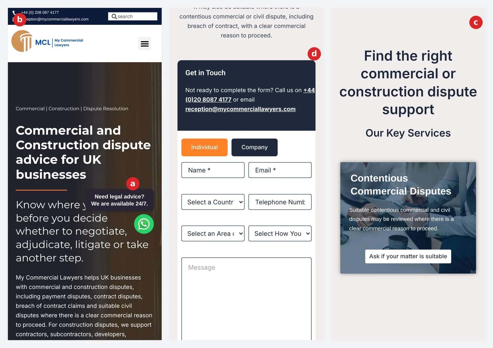

PREPARED FOR MY COMMERCIAL LAWYERS · 13 OCTOBER 2026
Be seen. Be trusted. Be chosen.
A growth plan for My Commercial Lawyers
How we would get My Commercial Lawyers ranking on Google, recommended by AI, and chosen by UK businesses with a commercial or construction dispute, in London and Croydon first, then nationally and for overseas clients.
0
of your 24 service and location pages are listed in the llms.txt file written for AI assistants
0
lawyers Google or AI can verify: all 40 guides are signed by one author account that is not on your team page
45
out of 100: Google's mobile performance score for your homepage
Prepared for the My Commercial Lawyers team · Prepared by George Levett and PJ Singh, legalbuzz · Data: live crawl of all 75 URLs on mycommerciallawyers.com, Google Lighthouse 12 (mobile), an iPhone-sized render, 13 October 2026. Rankings, competitor and AI share-of-voice figures: SE Ranking (Google UK and AI Search), export pending.
1WHO WE ARE
Who we are
We only work with law firms. And we are measured on instructions, not traffic.
legalbuzz is a legal-only growth partner. We get law firms found on Google, on the map, and in AI answers, then we make sure the enquiry turns into an instruction. No restaurants, no plumbers, no e-commerce. Every page, campaign and strategy we write is for law firms and the people who instruct them.
Law firms only. Always.
Every client we have is a law firm. We know what a contractor chasing an unpaid valuation types at 11pm, what makes them pick up the phone, and what your regulator will and will not let you say.
Proof: every firm on this page is a law firm.
We started in sales, not SEO.
Before legalbuzz we ran Conveyancer Plus, a sales team for law firms that only got paid when an enquiry became an instruction. We still think that way: every enquiry is tracked to see which ones become paying work.
Proof: 58% enquiry-to-instruction conversion at Conveyancer Plus.
We get firms named by AI.
AI visibility is not a line item for us, it is the core of the work. We track what ChatGPT and Google's AI say about you every month, and which enquiries come from them.
Proof: 0% to 29% of a client's enquiries from ChatGPT in three months.
Our story
-
01
A City of London law firm
Where we started
PJ Singh and George Levett learned the trade inside a leading City firm: how legal work is won, priced and delivered.
-
02
Conveyancer Plus
What we built
A pay-on-success sales operation for law firms. We sat on the phones, turned enquiries into instructions and hit 58% conversion. We only got paid when the firms did.
-
03
legalbuzz
Where we are now
We watched great firms lose work simply because nobody could find them. So we took that performance DNA and pointed it at search, maps and AI. We now work with 40+ firms across the UK and Australia, including specialist dispute firms facing exactly the shift you are.
What we have delivered for firms like yours
+300%
Signature Law (family law, Essex): enquiries in six months. A family-law-led firm in Romford. We built the local and service content, fixed the site and the map presence. +3,980% keywords ranking on Google, local family law pages on page one.
33
Deen & Co (employment law, London): enquiries in one month, three months in. A boutique specialist, like you. 29% of its enquiries now come from ChatGPT. Google clicks 62 to 1,021 a month, 7,017 AI citations, 25x the nearest competitor.
+413%
J Scott & Co (conveyancing, Maidenhead): enquiries in six months, from 15 to 77 a month. ChatGPT now names J Scott first for a conveyancer in Maidenhead. Google visits 50 to 728 a month, named in 687 AI answers in one month.
That is the answer we want ChatGPT and Google to give about My Commercial Lawyers when someone in London asks for a construction dispute solicitor, or when a business anywhere in the UK, or overseas, asks who can help with an adjudication, an unpaid invoice or a breach of contract.
Be seen. Be trusted. Be chosen.
Every legalbuzz campaign runs in three stages, in the order a client makes the decision. Here is what each one means for My Commercial Lawyers.
Be seen
Can Google, Maps and AI find you?
Fix the site, build the London construction disputes pillar, consolidate the overlapping service pages.
Today: Rankings Awaiting SE Ranking export
Be trusted
Does AI recommend you?
Teach AI who your barristers and solicitors are, where you are, and that you are regulated. Profiles, schema, UK legal citations, reviews.
Today: No lawyer on the site AI can verify
Be chosen
Do they call you, not the firm next door?
A site built to convert: barrister-led credentials and reviews up front, tap-to-call in the header, the "scope and fee before work begins" promise on every page.
Today: Testimonials with no review platform behind them; services start on screen six of a phone
Why Be chosen matters today: When someone does land on your site, the strongest proof you have is buried. Client testimonials sit on the homepage with nothing behind them that Google or AI can check, the regulatory status that sets you apart (barristers authorised by the Bar Standards Board for Direct Public Access and to conduct litigation) is only in the footer, and on a phone the phone number in the top bar cannot be tapped. The new site puts that proof up front on every page, so visits turn into calls and instructions.
In plain English: Be seen means Google and AI can find you. Be trusted means they recommend you. Be chosen means the client calls you, not the firm next to you.
Not an agency. A growth partner.
An agency sells you activity and sends a report. A growth partner sits on your side of the table and is measured on the same thing you are: new clients, instructions and revenue, by service and by location.
| A typical agency reports | legalbuzz reports |
|---|---|
| Impressions | Enquiries per month, by location |
| Keyword rankings | Free consults booked and attended |
| Website traffic | Enquiry-to-instruction rate |
| Number of blog posts | Calls and direction requests from Google Maps |
| Backlink counts | Times ChatGPT and Google AI recommend you |
Rankings are only useful if they turn into phone calls. We track every step from search to signed client, so you can see exactly what you are getting for your money.
In plain English: Your site is not the problem most firms have. It is fresh, long-form and already uses FAQ and article schema. What it does not do is tell Google and AI the three things they need before they recommend a law firm: where you are, which named lawyers stand behind the advice, and that independent sources agree. Fix those and the content you are already publishing starts earning citations instead of just traffic.
2YOUR BRIEF
Your brief
What your site tells us, and what we would confirm with you on the call.
| Question | Your answer |
|---|---|
| Are you interested in engaging a digital growth agency? | To confirm with you |
| Website | mycommerciallawyers.com |
| Which service areas do you want to grow? | To confirm with you |
| Are you currently using a marketing agency? | To confirm with you (your team page lists an in-house SEO specialist and a content creator) |
| Challenges to review on the call | To confirm with you |
| Your position in the firm | To confirm with you |
What we heard
Disputes only, commercial and construction. That is a strength, not a limitation. Specialist firms do not win by sounding like every other law firm. They win by owning the questions only a specialist can answer, and AI engines reward that even more than Google does.
Barrister-led, with litigation solicitors. Authorised by the Bar Standards Board for Direct Public Access and to conduct litigation (reference 191504). Very few firms in your market can say that. Today it lives in the footer.
London and Croydon first. You already have Croydon and City of London pages. What is missing is the structure that ties them into one London pillar, and an address Google can put on the map.
Already publishing. Forty guides, twenty-two of them in 2026, all with article schema. You would start from a body of work, not from nothing. The job is to sign it, connect it and get it cited.
Overseas clients are a genuine difference. Pages for international clients, overseas law firms and clients in Oman. Very few UK dispute practices target that. AI answers for "UK dispute lawyer for an overseas company" are where you can lead.
3WHERE MCL IS TODAY
Where MCL is today
Every page on the site, what it is built to win, and how it performs on a phone. Sources: a live crawl of all 75 URLs in your sitemap, Lighthouse 12 and a mobile render of the homepage on 13 October 2026. Ranking and traffic figures: SE Ranking (Google UK), export pending.
75
URLs in your sitemap: 35 pages and 40 guides
24
service and location pages built to win instructions
7
of them chasing the same London construction searches
2
internal pages (thank-you, Trello instructions) open to Google and AI
Where your keywords actually sit
Which pages earn your Google visibility, and how much of it sits on the pages that win instructions.
- Homepage (own name)
- Guides and insights
- Pages that win clients
Every page has a single H1, a written page title and a meta description, and the service pages carry FAQ schema. That puts you ahead of most firms we audit. The question this section answers is which of those pages Google actually ranks, and that needs the SE Ranking export.
The page map
Thirty-five pages and forty guides are in your sitemap. Here is every page built to win work, what its title says today, and the market it targets.
| Page | Page title today | Market | Keywords / visits |
|---|---|---|---|
| Construction disputes | Construction Dispute Solicitors London | Know Your Options | Construction | Awaiting SE Ranking export |
| Construction contract disputes | Construction Contract Solicitors London | Know Your Options | Construction | Awaiting SE Ranking export |
| Construction adjudication advice | Construction Adjudication Solicitors | Check Your Options | Construction | Awaiting SE Ranking export |
| Construction adjudication UK | Construction Adjudication UK | Industry Dispute Resolution | Construction (overlaps the page above) | Awaiting SE Ranking export |
| Construction litigation | Construction Litigation Solicitors | Know Your Options | Construction | Awaiting SE Ranking export |
| Construction dispute resolution | Construction Dispute Resolution Services UK | MCL | Construction (overlaps Construction disputes) | Awaiting SE Ranking export |
| Construction solicitors | No 1 Trusted Construction Solicitors UK: Avoid Disputes | Non-contentious construction | Awaiting SE Ranking export |
| Unpaid construction invoices | Unpaid Construction Invoice Solicitors | Know Your Options | Construction payment | Awaiting SE Ranking export |
| JCT contract dispute solicitor London | JCT Contract Dispute Solicitor in London - My Commercial Lawyers | Construction, London | Awaiting SE Ranking export |
| Contentious commercial disputes | Commercial Dispute Solicitors London | Check Your Options | Commercial | Awaiting SE Ranking export |
| Breach of contract | Breach of Contract Solicitors London | Know Your Options | Commercial | Awaiting SE Ranking export |
| Debt recovery | Commercial Debt Recovery Solicitors | Check Your Options | Commercial | Awaiting SE Ranking export |
| International arbitration | International Arbitration UK | Barrister-Led Dispute Support | International | Awaiting SE Ranking export |
| Page | Page title today | Market | Keywords / visits |
|---|---|---|---|
| Construction solicitor in Croydon | Construction Solicitor Croydon | Solicitors & Barristers Support | Croydon | Awaiting SE Ranking export |
| Commercial lawyer Croydon | Commercial Lawyer Croydon | Solicitors & Barristers Support | Croydon | Awaiting SE Ranking export |
| Construction lawyer City of London | Construction Lawyer City of London - My Commercial Lawyers | City of London | Awaiting SE Ranking export |
| Construction law in London | Construction Law London | Know Your Dispute Options | London (overlaps four other pages) | Awaiting SE Ranking export |
| Construction law firm London | Construction Law Firm London: 5 Clear Steps | Commercial Lawyers | London (overlaps) | Awaiting SE Ranking export |
| Construction solicitor near me | Construction Solicitor Near Me for Business Disputes | "Near me" | Awaiting SE Ranking export |
| Commercial lawyer near me | Commercial Lawyer Near Me | Solicitor & Barrister Support UK | "Near me" | Awaiting SE Ranking export |
| Breach of contract lawyer near me | Breach of Contract Lawyer Near Me | Solicitors Support UK | "Near me" | Awaiting SE Ranking export |
| UK dispute lawyer for international clients | UK dispute lawyer for international clients | International | Awaiting SE Ranking export |
| UK dispute partnerships for overseas law firms | UK Dispute Partnerships for Overseas Law Firms | International | Awaiting SE Ranking export |
| UK dispute lawyer Oman | UK Dispute Lawyer Oman - My Commercial Lawyers | Oman | Awaiting SE Ranking export |
In plain English: your site already has the pages. What it lacks is a structure that tells Google which page answers which question, and a London address that ties the location pages to a real office.
The London test
We will run the three searches a business owner in London would type, from London: "construction dispute solicitor london", "commercial litigation solicitor london" and "construction solicitor croydon". The results come from the SE Ranking export. Awaiting SE Ranking export
The London test
What a contractor in London sees for "construction dispute solicitor london". Searched from London.
AI Overview
Firms named Awaiting SE Ranking export
Maps pack
No Google Business Profile address found on your site to place you in it. Pack results Awaiting SE Ranking export
Why the site isn't ranking as it should
Seven findings from the crawl, in the order we would fix them. None of them is a criticism of the firm. They are the gap between a site built to describe a business and a site built to be found and cited.
What we found: You have pages for Croydon, the City of London and "near me" searches, but no office address appears on the contact page, and your LegalService schema has no address, phone, opening hours, geo or area served. The only address on the site is the registered address in the footer (7 Bell Yard, London WC2A 2JR).
The fix: One verified office address (or a service-area profile), stated identically on the site, in LegalService and LocalBusiness schema and on Google Business Profile, plus areaServed for London, Croydon and the UK.
What we found: Construction disputes, Construction dispute resolution, Construction law in London, Construction law firm London, Construction lawyer City of London, Construction solicitor near me and the JCT London page all target near-identical London construction terms, plus two adjudication pages (Construction adjudication advice and Construction adjudication UK). Google has to guess which one to rank, and usually ranks none of them well.
The fix: One London construction disputes hub, with each remaining page owning one distinct question (JCT, adjudication, unpaid invoices, City of London). Merge and redirect the rest.
What we found: The thank-you page and an internal "Trello Instructions" page are set to index and listed in your sitemap. A post titled "What are the 5 Cs of food safety: UK business guide" sits among your dispute guides. One post lives at a broken slug: /construction-disputesknowwhereyoustand/.
The fix: Noindex and remove the two utility pages from the sitemap, retire or redirect the off-topic post, and fix the slug with a redirect.
What we found: The LegalService schema carries an empty review list and images named "Environmental-and-Safety-Violations" and "Third-Party-Funding". The Organization contact point links to /contact-us/, which redirects to the homepage. Your LinkedIn company page is linked in the header but missing from the schema's sameAs list.
The fix: Rebuild the entity schema: LegalService with address, phone, hours, areaServed and the BSB reference; Person schema for every barrister and solicitor; sameAs to LinkedIn, the Bar Standards Board register and legal directories.
What we found: All 40 guides are signed by "Krystal Blackwell", a WordPress author account with a Gravatar placeholder image and no sameAs links. That name does not appear on your team page. The team page lists 18 people, but every "View Full Profile" link points back to the team page itself.
The fix: A profile page for each barrister and solicitor, with call or admission date, regulator, specialism and cases; every guide authored or reviewed by a named lawyer, with a last-reviewed date.
What we found: Rank Math has generated an llms.txt file, which is good. But it lists only the sitemap and the blog posts. None of your 24 service and location pages appear in it, so the file written for AI assistants describes you as a blog.
The fix: Rewrite llms.txt by hand: who you are, who regulates you, where you are, your services and locations first, then the guides.
What we found: The homepage quotes clients by name, but there is no link to Google reviews or any third-party review platform, and no Review schema. Separately, one service page title says "No 1 Trusted Construction Solicitors UK", a superlative a regulator may ask you to substantiate.
The fix: Start a review flow to Google and one legal review platform, mark up genuine reviews, and replace the "No 1" claim with a factual, verifiable one.
The mobile test: what a client on a phone actually sees
Most people with a dispute look for help on a phone, often outside working hours. We rendered the site on an iPhone-sized screen and ran Google's Lighthouse test on the homepage. Four things stand out.

- a
A chat bubble sits on the headline
"Need legal advice? We are available 24/7" covers the line that says what you do.
- b
The top-bar phone number cannot be tapped
The first tap-to-call link is on screen two.
- c
Twenty-one screens long
Services ("Our Key Services") do not start until screen six.
- d
A long form before any service
Seven fields, three of them drop-downs, plus a Trello consent box, ahead of what you actually do.
- Most people look for a dispute lawyer on a phone. This is the first impression they get.
The speed test: Lighthouse
Lighthouse is Google's own page-quality test. Scores are out of 100; Google treats anything under 50 as poor. Mobile is the one that matters, because it is the one Google ranks you on.
The speed test: Google Lighthouse on a phone
Out of 100. Google treats anything under 50 as poor, and ranks you on the mobile score.
Performance
Accessibility
Best practices
5.7s
before the main content appears
Target: under 2.5s
2.1s
where taps do nothing
Target: under 0.2s
4.1 MB
downloaded for one page
Target: under 1.5 MB
| Measure (mobile) | MCL | Google's target | What it means |
|---|---|---|---|
| Performance score | 45 / 100 | 90+ | Poor. The page is slow to become usable on a phone. |
| Server response time | 0.12 seconds | Under 0.6 s | Good. The caching works; the problem is what the page then loads. |
| Largest content paint | 5.7 seconds | Under 2.5 s | The main content takes nearly six seconds to appear. |
| Total blocking time | 2.1 seconds | Under 0.2 s | Over two seconds where taps do nothing. 349 KB of unused JavaScript is loading. |
| Page weight | 4.1 MB | Under 1.5 MB | Images in old formats: 1.8 MB could be saved by converting them alone. |
| Accessibility | 87 / 100 | 90+ | Contrast failures, form fields and drop-downs without labels, headings out of order. |
| Best practices | 79 / 100 | 90+ | Third-party cookies and browser issues logged on load. |
| SEO (technical) | 100 / 100 | 90+ | The basics pass. This score does not measure location, authorship or entity signals, which is where the real gap is. |
Mobile speed against the firms ranking for your London searches
| Firm | Score | Details |
|---|---|---|
| Awaiting SE Ranking export | ||
| My Commercial Lawyers | 45 | (server response 0.12s, largest content paint 5.7s) |
Why this matters for the plan. Every speed problem above comes from the same place: an Elementor and Pro Elements build on the Astra theme, loading 4 MB of scripts and uncompressed images. Patching it costs nearly as much as rebuilding it. That is why Section 8 includes a new AI-ready site at no cost.
4WHY GOOGLE AND AI DO NOT TRUST THE SITE YET
Why Google and AI do not trust the site yet
Legal advice on disputes is what Google calls a "Your Money or Your Life" topic: advice that can change a business's finances or survival. For those topics Google and the AI assistants apply their strictest test of who wrote a page and whether they can be believed. Google calls it E-E-A-T.
E-E-A-T in one minute
Experience Has the author actually done this? First-hand detail only a practising barrister or solicitor would know. Adjudication guides written from the practice, not paraphrased from the TCC guide.
Expertise Is the author qualified to say it? A named barrister or solicitor on every page of advice, with call or admission date, regulator and specialism, linked to a profile that proves it.
Authoritativeness Do others recognise them for it? Chambers listings, the Bar Standards Board register, the Law Society, legal directories, press and other sites that say the same thing about the same person.
Trust Can the reader rely on this page today? Dates, a reviewer, working links, consistent facts, reviews, a real address and phone, a secure fast site. Trust is the one Google says matters most.
AI assistants work the same way. When ChatGPT or Google AI decide whether to name a firm, they look for a person, credentials they can verify elsewhere, and content that is current and corroborated. Section 6 shows what that means for you.
What the site tells them about your lawyers
Your credentials are genuinely strong: barristers authorised by the Bar Standards Board for Direct Public Access and to conduct litigation, alongside litigation and construction solicitors. Almost none of it is in a form Google or AI can read. Here is what they find instead.
What we found: The team page lists eighteen people, from regulatory barristers to receptionists, in 316 words including navigation. Every "View Full Profile" link points back to /team/.
What it signals: There is no profile page for any barrister or solicitor, and no Person schema, so no byline can resolve to a real lawyer.
What we found: "Authorised and regulated by the Bar Standards Board ... reference no: 191504" appears once, in the footer, and in no schema.
What it signals: AI cannot connect you to the BSB register, so it cannot confirm you are a regulated legal practice rather than a lead-generation site.
What we found: The BlogPosting schema names Krystal Blackwell as author and editor, linked to a WordPress author archive with a placeholder image and no sameAs links.
What it signals: The byline carries no weight, and on a YMYL topic it can count against you.
The blog: forty guides, twenty-two of them from 2026
| Finding | Detail | Why it matters |
|---|---|---|
| Fresh | Twenty-two of forty guides were published in 2026, most of them updated in August and September. | A strength. Google and AI weight freshness heavily on legal topics. Keep the cadence. |
| Unsigned by a lawyer | All forty guides carry the same author account, "Krystal Blackwell", who has no profile, role or credentials on the site. | Advice from an unverifiable author on a legal site is a negative signal under the quality guidelines. |
| Off-topic | "What are the 5 Cs of food safety: UK business guide" sits among the dispute guides. | It tells Google and AI the site is a general business blog, diluting the specialism. |
| Overlapping | Guides such as "London construction lawyer: what to check first", "How to choose a construction dispute solicitor in London" and "The contract is not clear" (London) chase the same searches as your London service pages. | They compete with each other and with your own service pages for the same searches. |
| A thinner 2025 batch | Most of the eighteen guides from September to November 2025 are short, news-style pieces of about a thousand words (Building Safety Levy, Arbitration Act 2025, late payment). | Good topics that need a lawyer's byline, a review date and links into the service pages to earn their keep. |
| Good bones | The 2026 guides (adjudication checks, JCT contracts, claim versus dispute, debt recovery versus dispute) are substantial and well structured. | These are the easiest wins on the site: sign, review-date, link into the pillars. |
What we do about it. A proper profile page for each barrister and solicitor with Person schema linked to the Bar Standards Board or Law Society register, LinkedIn and legal directories, so every byline resolves to a verifiable lawyer. Every guide gets a named lawyer as author or reviewer, a last-reviewed date and Article schema. The forty guides are triaged: sign the strong 2026 ones, merge the overlapping London construction guides, retire the off-topic post, and link every guide into its service pillar. This is part of the Fix step in month one, and it is re-checked every month after.
5WHO YOU ARE UP AGAINST IN LONDON
How you compare with the firms on London page one
Same tool, same month, same country. Keyword counts and traffic are SE Ranking estimates for Google UK; link data is from SE Ranking's backlink index; Google ratings and review counts are from Google Maps.
| Firm | Keywords | Top 10 | Est. visits / mo | Referring domains | Domain trust |
|---|---|---|---|---|---|
| My Commercial Lawyers | Awaiting SE Ranking export | ||||
| The firms on page one for your London searches | Awaiting SE Ranking export |
Estimated Google visits a month
SE Ranking, Google UK.
The Maps pack is a review contest
The three firms Google shows on the map for "construction solicitor croydon" or "commercial lawyer london" are chosen on relevance, distance and prominence, and prominence is mostly reviews. We found no link from your site to a Google Business Profile or to any review platform, so the first step is to confirm whether a profile exists and at which address.
The Maps pack is a review contest
Google reviews on the profiles that compete for the map.
What nobody in London is likely to do, which is where you win
Barrister-led Direct Public Access. A business can instruct a barrister directly, without a solicitor in between. That is a cost and speed story most dispute firms cannot tell, and AI answers to "how much does a construction dispute cost" can carry it.
Scope and fee before work begins. Your homepage already says "Know the scope and fee before work begins". Few firms publish a fee answer for adjudication or debt recovery. A firm that does can own the cost question.
Overseas clients. Pages for overseas law firms, international clients and clients in Oman. "UK dispute lawyer for an overseas company" is a question AI is asked, and few UK firms answer it directly.
Seven days a week. Office hours of 6am to 10pm every day are listed on the contact page. Disputes do not wait for Monday; say it where the client decides.
Construction and commercial under one roof. Adjudication, JCT disputes, unpaid invoices, breach of contract and debt recovery. A hub that links them answers the whole question a contractor has, not one part of it.
6WHAT AI SAYS ABOUT YOU
What AI says about you
How we measure: SE Ranking AI Search tracks which brands and links appear in Google AI Overviews, Google AI Mode, ChatGPT, Perplexity and Gemini answers in the UK. We compare you with the firms that rank for commercial and construction disputes in London. Alongside it, we checked everything on your own site that decides whether AI can cite you at all.
Pending
share of voice across the London dispute firms (SE Ranking AI Search)
4 / 4
AI crawlers allowed in: GPTBot, OAI-SearchBot, ClaudeBot, PerplexityBot
0
of 24 service and location pages in your llms.txt
0
lawyers AI can verify from your site
AI share of voice: the firms competing for London
Google AI Overviews, AI Mode, ChatGPT, Perplexity and Gemini. SE Ranking AI Search.
Where you are already winning
AI can read the site. Every major AI crawler we tested (GPTBot, OAI-SearchBot, ClaudeBot, PerplexityBot) gets the page. Many firms block them by accident. You do not.
You speak in questions. FAQ schema on 26 pages, and guides titled the way people ask: "What is the difference between a claim and a dispute?", "Is construction adjudication the right step?". That is the shape AI answers take.
You publish. Twenty-two guides in 2026, all with article schema and update dates. Plenty of law firm blogs go quiet for years. Your raw material is already there.
What AI does not know
Where you are. No office address on the site and none in the schema. Asked for a construction solicitor in Croydon or the City, AI has nothing that places you there, so it names a firm whose address it can confirm.
Who your lawyers are. Eighteen names on the team page, no profiles, no Person schema, and every guide signed by an author who is not on the team. AI weighs demonstrated expertise heavily, and right now it cannot find any.
That you are regulated. Your Bar Standards Board authorisation is the fact that separates you from lead-generation sites. It is in one line of footer text and nowhere AI looks for it.
Your AI-citation fix list
Everything AI needs before it will name a firm, what your site gives it today, and when we fix it. Every "today" entry was checked on the live site on 13 October 2026.
| What AI needs | Today on your site | The fix | When |
|---|---|---|---|
| To know where you are | No address on the contact page or in schema; registered address only in the footer | One verified address (or service-area profile), identical on site, schema and Google | Month 1 |
| To know who stands behind the advice | One unverified author account on all 40 guides; no lawyer profiles | A profile and Person schema for each barrister and solicitor; every guide signed or reviewed | Month 1 to 2 |
| To know you are regulated | BSB reference in the footer text only | BSB reference in LegalService schema, linked to the register, on every page | Month 1 |
| To find your services | llms.txt lists only blog posts; 0 of 24 service and location pages | Hand-written llms.txt: services and locations first, then guides | Week 2 |
| To be able to read the site | GPTBot, OAI-SearchBot, ClaudeBot and PerplexityBot all allowed (verified) | Keep it that way through the rebuild | Done |
| To quote you | FAQ schema on 26 pages; long-form 2026 guides | Answer-first openings, a fee answer per service, named reviewer and date | Month 2 onwards |
| Others to agree with you | No review platform linked; LinkedIn missing from schema | Reviews, UK legal directories, BSB and Law Society listings, press, all with the same name, address and phone | Month 2 onwards |
The AI answers you appear in today
Every AI answer in SE Ranking's UK index that names My Commercial Lawyers or cites one of your pages.
| What the person asked | Engine | How you appear |
|---|---|---|
| Awaiting SE Ranking export |
In plain English: Businesses now ask ChatGPT and Google AI "who is a good construction dispute solicitor in London" and "how much does adjudication cost". The firms being named have addresses, named lawyers and citations that agree with each other. Your content is good enough to be quoted. The fix list above is what lets AI trust it enough to say your name.
7THE ACTION PLAN
The action plan
Everything you do, the keywords for each of those services, the local terms on top, and the structure that turns both into authority. Search volumes and difficulty will come from SE Ranking, Google UK; difficulty is 0 to 100, and anything under 20 is winnable within a few months for a well-built page.
7.1 Everything you do: the service inventory
Before any keyword research we listed every service on the site, because each one is a question somebody types into Google or asks an AI.
| Group | What you offer today | Where it lives |
|---|---|---|
| Construction disputes | Construction disputes; construction contract disputes; JCT, FIDIC and NEC disputes; construction litigation; dispute resolution | Five service pages, one JCT London page |
| Adjudication | Construction adjudication advice; adjudication in the UK; enforcing an adjudicator's decision in the TCC (guide) | Two overlapping service pages, several guides |
| Payment | Unpaid construction invoices; retention disputes; late payment; letters before action | One service page, four guides |
| Commercial disputes | Contentious commercial disputes; breach of contract; business-to-business disputes | Two service pages, one "near me" page, many guides |
| Debt recovery | Business debt recovery; fixed-fee debt recovery | One service page, three guides |
| International | International arbitration; overseas clients; overseas law firm partnerships; Oman | Four pages |
| Non-contentious | Construction solicitors (avoiding disputes) | One page; title needs a factual rewrite |
In plain English: you already have more service and location pages than you need. The plan is not more pages. It is fewer, clearer ones, each owning one question, each signed by a lawyer.
7.2 Keyword research: the questions behind each service
For every service above, these are the searches we would build the pillars around. Volumes and difficulty follow from the SE Ranking export.
| Service | Keywords worth owning (searches a month, difficulty) | Page that wins it |
|---|---|---|
| Construction disputes | construction dispute solicitor london; construction lawyer london; construction dispute lawyer Awaiting SE Ranking export | London construction disputes hub |
| Adjudication | construction adjudication solicitor; adjudication lawyer; enforce adjudication decision Awaiting SE Ranking export | One adjudication pillar (merging the two pages) |
| Payment | unpaid invoice construction; retention payment dispute; pay less notice Awaiting SE Ranking export | Unpaid invoices pillar |
| Commercial disputes | commercial litigation solicitor london; breach of contract solicitor; business dispute lawyer Awaiting SE Ranking export | Commercial disputes pillar |
| Debt recovery | commercial debt recovery solicitor; business debt recovery; letter before action Awaiting SE Ranking export | Debt recovery pillar with the fee answer |
| International | uk dispute lawyer for overseas company; international arbitration lawyer uk Awaiting SE Ranking export | International hub |
7.3 Keyword research: the local layer
Service pages answer the question. Local pages answer "near me". London first, then Croydon, then the overseas audience you already serve.
| Keyword | Searches / month | Difficulty | Page we build |
|---|---|---|---|
| construction dispute solicitor london | Awaiting SE Ranking export | London hub | |
| construction lawyer london | Awaiting SE Ranking export | London hub | |
| jct contract dispute solicitor london | Awaiting SE Ranking export | JCT in London | |
| construction lawyer city of london | Awaiting SE Ranking export | City of London page |
| Keyword | Searches / month | Difficulty | Page we build |
|---|---|---|---|
| construction solicitor croydon | Awaiting SE Ranking export | Croydon page | |
| commercial lawyer croydon | Awaiting SE Ranking export | Croydon page | |
| commercial lawyer croydon cost | Awaiting SE Ranking export | Croydon cost guide |
7.4 The pillar structure, explained
A pillar is not one "London" page with the area name swapped in. It is a hub page plus a set of supporting pages that each own one question, all linking back to the hub, and all corroborated by a trust layer outside the site. Google and AI then see one firm that answers everything about construction disputes for businesses in London, rather than seven pages that mention it.
How a location pillar works
One hub, five supporting pages, the service pillars feeding in, and a trust layer that proves it all to Google and AI.
Service pillars (national)
Location hub
Construction dispute solicitor London
Searches and difficulty Awaiting SE Ranking export
Supporting pages: each owns one London question
Trust layer: what corroborates every claim
| Layer | Page | Target | What it contains |
|---|---|---|---|
| Hub | /construction-dispute-solicitor-london/ | construction dispute solicitor london, construction lawyer london | Who you are in London, the barrister-led Direct Public Access model, every construction service, scope and fee before work begins, lawyer profiles, reviews, map, FAQs, links to every supporting page. Replaces the overlapping London pages. |
| Support | /london/jct-contract-disputes/ | jct contract dispute solicitor london | The existing JCT London page, focused on one question. |
| Support | /london/construction-adjudication/ | construction adjudication london | How adjudication works for London projects, the TCC, enforcement, timescales, fees. |
| Support | /london/unpaid-construction-invoices/ | unpaid invoice solicitor london | Payment notices, pay less notices, retention, what to do this week. |
| Support | /construction-lawyer-city-of-london/ | construction lawyer city of london | The existing page, linked into the hub. |
| Support | /construction-solicitor-in-croydon/ | construction solicitor croydon | The existing Croydon page, linked into the hub, with the Croydon cost guide. |
| Trust | Google Business Profile | Maps pack for London and Croydon searches | A verified profile at a real address, services completed, photos, posts, and a review flow that names the service. |
| Trust | Citations and press | AI corroboration | Bar Standards Board register, Law Society Find a Solicitor, The Legal 500, Chambers, Construction News, Building, local business directories. |
A note on the office address. Your site gives a registered address at 7 Bell Yard, London WC2A 2JR, but no office address on the contact page. Google requires a Business Profile address to be somewhere clients can meet you, at least by appointment. If that is true of an office in London or Croydon, everything above is straightforward. If not, we set the profile up as a service-area business for London and the South East, which still gets you into the map results.
7.5 How we make you the authority
Google and AI do not rank firms, they rank evidence. Authority is a set of signals that all say the same thing about the same people, in the same words, in places the firm does not control. Here is what we build for My Commercial Lawyers and where each piece shows up.
| Signal | What we build | Where it works |
|---|---|---|
| The expert | A full profile for each barrister and solicitor: call or admission date, regulator, specialism, notable matters, Person schema, and their name on every guide they write or review. | Google E-E-A-T, AI answers that name a lawyer, the "best construction solicitor" queries |
| The entity | LegalService and LocalBusiness schema with one address, identical name, address, phone and hours on the site, Google, LinkedIn and every directory, plus the BSB reference. | Maps pack, Google AI Mode, ChatGPT and Perplexity citations |
| Information gain | Pages that say something not already on page one: what an adjudication really costs, a pay less notice checklist, how Direct Public Access works for a business. | AI quotes the page that adds something new. This is how Deen & Co went from zero to 29% of ChatGPT answers. |
| Social proof | A review flow after every matter, naming the service and the area, on Google and one legal review platform. | Maps prominence, review snippets, "best" queries |
| Third-party corroboration | UK legal directories, construction trade press, the Bar Standards Board and Law Society registers, LinkedIn. | Referring domains that are UK and legal |
| The track record | Every guide signed or reviewed by a named lawyer with a last-reviewed date and Article schema; overlapping guides merged; case studies linked to the services. | The E-E-A-T gap closed: Google and AI can connect the byline to the lawyer. |
| Technical trust | Fast on mobile, labelled forms, no indexed utility pages, a hand-written llms.txt, FAQ schema on every guide. | Rankings, and the Lighthouse scores in Section 3 turning green |
7.6 How you dominate London
Page one for "construction dispute solicitor london" has three places a client can tap before they scroll: the Maps pack, the organic results and the AI answer. The plan is built to hold all three.
Win the maps
Today: No address on the site to rank
- A verified profile at a real address
- Reviews that name the service
- Same details on every directory
Win the organic
Today: Seven pages splitting one search
- One London hub plus five supporting pages
- Overlapping pages merged and redirected
- A fast new site
Win the AI answer
Today: No lawyer AI can verify
- Teach AI where you are
- Barrister and solicitor profiles
- UK legal citations and press
Then the same three-slot play is repeated for Croydon, then for the national adjudication and debt recovery searches, using the same hub-and-spoke structure and the same trust layer.
8THE LEGALBUZZ METHOD
The legalbuzz method
Four steps, in the same order, every month: analyse, fix, build content, build buzz, then report. It is not a project with a finish date. The cycle repeats, and each month's cycle produces the next milestone on the timeline.
-
01
Analyse
Every month
Re-measure every page, keyword, link, enquiry and AI answer, so each cycle starts from what actually moved.
-
02
Fix
Every month
Speed, broken pages, schema, listings, the link profile. Big fixes land in month one, then the site is re-checked monthly.
-
03
Build content
Every month
New pillar and supporting pages with information gain: what adjudication really costs, a pay less notice checklist. Reviewed by your barristers.
-
04
Build buzz
Every month
Citations, press, Google profiles and reviews, plus a monthly check of what ChatGPT and Google AI say about you.
What each month's cycle produces
Six months at a glance
The four steps run every month. These are the workstreams they deliver.
A new AI-ready website, at no cost
Section 3 showed a homepage that downloads 4 MB, takes almost six seconds to show its main content on a phone, hides its services until screen six and cannot be called with a tap from the top bar. Fixing that build piece by piece costs almost as much as replacing it, and leaves you with Elementor underneath. So with buzzExpansion and buzzInfluence we build My Commercial Lawyers a new site, and we do not charge for it.
Built around the pillars. Service hubs and location hubs are the architecture, not an afterthought. Every page has one job and links to its hub.
Structured data on every page. LegalService, LocalBusiness, Person for every barrister and solicitor, Service and Offer (your fixed fees), FAQPage, Review, and the BSB reference. This is how AI reads a site without guessing.
Fast on a phone. Target Lighthouse performance 90+, server response under half a second, images sized for phones, one light theme instead of a page builder.
Clear about who, where and how much. Name, address, phone, hours, each lawyer's credentials, the regulator and your fee approach stated once, consistently, in text AI can quote. The Direct Public Access story told plainly.
Built to convert. Tap-to-call and "Check your dispute options" in the header on every page, services on the first screen, a three-field form instead of seven, nothing covering the headline.
Nothing lost. Every current page and post migrated with redirects, so the guides keep what they have. Overlapping pages merged into the pillars. WordPress stays yours, and we hand over admin and a short training.
In plain English: Included at no cost with buzzExpansion and buzzInfluence. The site is yours to keep whatever happens afterwards. buzzStarter focuses on your Google Business Profile and the Maps pack, on the existing site.
What we need from you
- Your lawyers' review time. Roughly an hour a fortnight to review and sign off new pages. Everything we write follows the BSB Handbook and the SRA's rules on publicity: no promised outcomes, nothing you would not put your name to.
- Access. WordPress, Google Business Profile, Google Search Console and Analytics. We set up what does not exist.
- A view of the enquiries. Where they come from and which ones become clients, so the reports are about instructions, not traffic.
- One decision on fees. Which services can carry a published fee or fee range, so the cost question has an answer on the page.
How we report
One report a month, led by growth: enquiries and consultations by location and service, calls from Maps, page-one keywords, what AI said about you this month and which pages it cited, what went live, and what is next. Problems are raised with you directly as they happen, not buried in a PDF.
What we measure
| Category | Metrics |
|---|---|
| Be seen | - Page-one keywords in London, Croydon and nationally - Map pack appearances for London and Croydon searches - Pages cited by Google AI and ChatGPT |
| Be trusted | - Share of AI answers naming My Commercial Lawyers (baseline from the SE Ranking export) - Google reviews (baseline to confirm) - UK legal citations and press earned |
| Be chosen | - Enquiries and consultations by location and service - Calls and direction requests from Maps - Enquiry-to-instruction rate |
9SALES PROCESS ANALYSIS
From enquiry to instruction
We bring you the enquiries. Our sales guidance helps your team win them. Included in buzzExpansion: a 30-minute sales process analysis with your team, then a sales and email automation plan that we implement for you.
Business owners with a dispute are stressed, in a hurry and often filling in three or four forms at once. The first firm to have a proper conversation usually wins. The winners get three things right:
They respond first. Speed shows the client how you'll treat their case.
They make the client feel understood. Good questions and genuine empathy build trust fast.
They make the next step easy. A clear, simple path from "hello" to "let's go ahead".
The seven-step enquiry process
-
01
Respond
Within 5 minutes
Call and send an instant acknowledgement.
-
02
Connect
First 20 seconds
Introduce yourself, build rapport, set the agenda.
-
03
Discover
Listen 70%
Fact-finding and qualifying questions.
-
04
Advise
Clear and simple
How you'd help, the steps and the cost.
-
05
Handle concerns
Never argue
Listen, acknowledge, explore, respond.
-
06
Close
On the call
Agree the next step and take the instruction.
-
07
Follow up
Up to 30 days
A set sequence until you get a clear answer.
| When | How | What |
|---|---|---|
| Instantly | Email and SMS | Acknowledge and promise a call |
| 5 minutes | Call | First call, voicemail if missed |
| 10 minutes | SMS | "Sorry I missed you. Book here." |
| Same day | Call and email | Second call, then the quote |
| Day 1 | Call and SMS | "Did you get my quote?" |
| Day 3 | Helpful guide plus reviews | |
| Day 7 | Call and SMS | "Still need help with this?" |
| Day 14 to 30 | Quote held open, final check-in |
| Area | What we look at |
|---|---|
| Speed to lead | How fast new enquiries get a call, and who owns them each day |
| The first call | Introduction, agenda and the questions your team asks |
| Dispute tone | Calm, commercial and one clear first step |
| Objections | "Another firm is cheaper", "I need to think about it", "I need to talk to my business partner" |
| Closing | Summarise, check concerns, ask, then send the engagement letter and payment link on the call |
| Follow-up | The email and SMS sequence above, set up in your CRM |
What we track: speed to lead, contact rate, conversion rate, drop-off point, cost per instruction and lost-lead reasons.
In plain English: We get you seen and trusted. This makes sure the enquiries we bring turn into signed clients, not missed calls and unanswered quotes.
10WORKING TOGETHER
Working together
Three ways to start. One clear goal: more instructions. Every option is legal-only, reported on enquiries, and starts with a six-month term, then rolls month to month.
buzzStarter
Google Business Profile and the Maps pack · £ to confirm a month
- Google Business Profile completed, verified and optimised
- Monthly Google Business Profile posts to keep the listing fresh and active
- Review flow started after every consult, aiming for the Maps pack
- Target 5 to 10 local keywords
- Onsite fixes for speed and visibility on the existing site
- Citation and link building (lite)
- Quarterly press promotion and citations
- Monthly performance report
- For: winning the London and Croydon Maps pack first.
buzzExpansion
Own London construction disputes, then national · £ to confirm a month
- Everything in buzzStarter
- A new AI-ready website, at no cost
- Target 20 to 30 keywords: the London construction pillar, the service pillars, then Croydon and national
- Content written to win AI visibility, refreshed every month
- Advanced technical, local and onsite SEO
- Quarterly press promotion and citations to build authority and reach
- Link building and citation building (Pro), plus directory management
- Review Generation System and AI reputation monitoring
- Monthly competitor monitoring and a competitor dashboard
- Landing pages for paid ads and conversion optimisation (lite)
- A 30-minute sales process analysis, with a sales and email automation plan implemented for you
- Comprehensive monthly reporting and priority support
- For: the London presence your site is reaching for, built properly.
buzzInfluence
Own the AI answer for UK construction and commercial disputes · £ to confirm a month, depending on scope
- Everything in buzzExpansion, including the new site
- Target 30 to 50+ keywords across every service line, including adjudication, debt recovery and overseas clients
- Long-form legal articles, AI prompt tracking and topic suggestions
- Monthly press distribution and blog-to-social content
- Bespoke multi-location SEO strategy
- Link and citation building (Enterprise)
- AI Sales Agent (two-week email and SMS follow-up) and 24/7 AI webchat
- Quoting tools and webforms
- For: becoming the firm AI names for construction and commercial disputes anywhere in the UK, and for overseas clients.
Offers running now
Every package price below already includes your first-month offer: £1 when we build your new site, or 50% off when you keep and optimise your current one.
| Package | Monthly price | First month with a new site | First month keeping your current site |
|---|---|---|---|
| buzzStarter | £ to confirm | Not included (works on your current site) | 50% off |
| buzzExpansion (recommended) | £ to confirm | £1 | 50% off |
| buzzInfluence | £ to confirm, depending on scope | £1 | 50% off |
Like what you hear? A sign-up-today rate for buzzExpansion £ to confirm, still with the £1 first month or 50% off, for 48 hours.
The term: an initial six-month term, then it rolls on month to month.
Prices are in pounds sterling, per month, plus VAT. You keep this audit either way.
What happens after today
1. Today. We walk through this proposal together and answer your questions.
2. This week. You choose a package. We send a simple one-page agreement.
3. Week 1. Onboarding call, access set up, baseline enquiries and AI answers recorded.
4. Weeks 2 to 4. Every critical fix goes live on the current site, the Google profile and address are settled, the review flow starts, and the new site is in design with your team.
5. Month 2 onwards. The new site goes live with the London hub, then new pages every month. The monthly report shows enquiries won, rankings gained and AI answers naming MCL.
Let's get My Commercial Lawyers found first in London.
Reply to our email or book a time, and bring any question this document raised. No obligation, and the audit is yours to keep.
Book your next calllegalbuzz for the My Commercial Lawyers team
11FULL AUDIT: CASE STUDIES AND YOUR GOOGLE RANKINGS
What this looked like for other firms
We are measured on one number: enquiries that turn into instructions. Here are three clients and one long-term partner, each with what they do, what we did, and what it brought in. Every figure is from the firm's own reports and approved by the client. Full write-ups: legalbuzz.co/case-studies.
The enquiry scoreboard
| Firm | What they do | Enquiries before | Enquiries after | Time |
|---|---|---|---|---|
| J Scott & Co | Conveyancing and private client, Maidenhead High Street | 15 a month | 77 a month (+413%) | 6 months |
| Deen & Co | Settlement agreements, Canary Wharf, London | A handful, none tracked | 33 in a single month, 29% from ChatGPT | 3 months |
| Signature Law | Family law, Romford, Essex | Baseline, January | +300% | 6 months |
| conveyancing-solicitor.co.uk | National solicitor directory, England and Wales | Measured on visibility, not enquiries | +71% search impressions, 48% from town pages | 8 months |
Enquiries are each firm's own reconciled monthly count: calls, forms and emails that reached a fee earner. Not clicks, not impressions.
J Scott & Co, Maidenhead: 15 to 77 enquiries a month
A familiar starting point. A respected firm with a website that had already been rebuilt once and still brought in no work: 50 visits a month from Google, ranking for its own name and little else, and never named by ChatGPT. We rebuilt and relaunched the site at the end of January 2026, then ran the monthly cycle.
| +1,356% Google visits a month, January to July (50 to 728) | +413% Enquiries a month (15 to 77), the firm's own reconciled figure | 0 to 687 Times AI assistants named the firm in one month |
|---|
- Months one to two. Site health 0 to 100 percent, schema added, Google Business Profile rebuilt to 84 out of 100 with 65 five-star reviews, listings corrected.
- Months two to six. A page for every town around Maidenhead and a guide for every buyer question. Searches it appears for went from 133 to 342, with 150 in Google's top spots.
- Why it matters for My Commercial Lawyers. A decent-looking site that was not being chosen. Clear location pages, schema and a rebuilt Google profile did the work, exactly as the London pillar is designed to.
Deen & Co, Canary Wharf: 33 enquiries in one month
A boutique settlement agreement specialist in one of the most competitive legal markets in the UK, competing with national firms on far stronger domains. We built a Redundancy Hub that publishes a page for an employer's staff the moment job cuts are announced, and an Answers hub built from 473 real employee discussions.
| 16x Monthly Google clicks, July to September 2026 (62 to 1,021) | 7,017 AI search citations, 25 times the nearest competitor | 33 Genuine enquiries in a single month |
|---|
- Why it matters for My Commercial Lawyers. A London specialist with a clear niche beat bigger firms by answering the exact question people ask, when they ask it. Your version of that question is cost and next step: "how much does adjudication cost", "what to do about an unpaid construction invoice". Your guides already answer it. They need a lawyer's name on them.
Signature Law, Romford: a family law firm, enquiries up 300%
A family-law-led firm opposite Romford station, Law Society Family Law Advanced accredited, founded by a specialist of fifteen years. Good work, quietly overlooked online in a crowded Essex market. We fixed the site and the map presence, then built family law service pages (child arrangements, financial settlement, mediation) and a location page for every town across Havering and the Essex commuter belt.
| +300% Enquiries against the January baseline | +3,980% Keywords ranking on Google | Page one Local family law pages for the towns the firm serves |
|---|
Why it matters for My Commercial Lawyers. A specialist firm with strong lawyers and little verifiable footprint online, fixed with service pillars plus town pages. The same structure works for London and Croydon.
conveyancing-solicitor.co.uk: the pillar model at national scale
A long-term partner with a national footprint: a location silo with a page for every town in England and Wales, local fee pages and home-mover guides, on top of technical fixes and citations.
| +71% Search impressions in 2026, January to August | 29% Better average Google ranking across the site | 48% Of all search visibility now comes from the town pages |
|---|
Why it matters for My Commercial Lawyers. The pillar model at scale: half of what the site earns comes from pages that name a place. London, then Croydon, then national, is the same model at your size.
In summary: what we did, and what changes for My Commercial Lawyers
| The clients above | MCL today (verified 13 October 2026) | MCL, after this plan | |
|---|---|---|---|
| The site | Rebuilt or fixed first: fast, readable by AI, schema on every page | Elementor build, Lighthouse 45 on mobile, 4 MB homepage; good FAQ and article schema | New AI-ready site at no cost, Lighthouse 90+, entity and Person schema throughout |
| Location | A page for every town served, linked into a hub | Croydon, City and "near me" pages, no office address, seven pages splitting London | London hub plus five supporting pages, then Croydon and national |
| Services | A pillar per practice area answering what clients type | Thirteen service pages, three overlapping | Five service pillars, each owning its questions |
| Trust | Named authors, reviews built steadily, citations and press | One unverified author on 40 guides; testimonials with no platform; BSB status in the footer only | Named barristers and solicitors as authors, a review engine, BSB reference in schema, UK legal citations |
| AI | Tracked monthly; J Scott named 687 times, Deen & Co 7,017 citations | All AI crawlers allowed; llms.txt lists no service pages; share of voice Awaiting SE Ranking export | Share of voice tracked monthly against the London firms |
| Measured on | Enquiries: 15 to 77, 33 in a month, +300% | Baseline to record in week 1 | Enquiries and consultations, by location and service, every month |
Your current Google rankings
Every keyword My Commercial Lawyers ranks for in Google UK's top 100, grouped by the page that ranks. Source: SE Ranking. Awaiting SE Ranking export
| Page | Keyword | Searches / mo | Position | Type |
|---|---|---|---|---|
| Awaiting SE Ranking export |